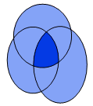
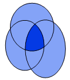
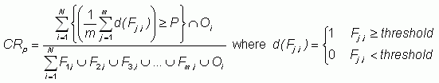

where Fm,i is the value of forecast m at gridpoint i, and Oi is the corresponding observed value. In the diagram CR is the ratio of the dark area to the total shaded area.
In the case of two fields CR is identical to the threat score; in general, CR can be thought of as a multi-dimensional threat score. When computed as a function of event threshold it measures the correspondence between fields for varying event amplitudes. For a given threshold, the time evolution of CR measures the predictability error growth of the event. The CR for an ensemble, not including the observed field, measures the divergence of the ensemble. The correspondence ratio behaves similar to the anomaly correlation but is better suited to discontinuous fields (such as rainfall) because it is not swamped by the non-event gridpoints.
A probabilistic form of the correspondence ratio, CRp,
can be used to verify ensemble forecasts:

and P is the chosen probability threshold. When P=100% then CRp=CR. When P=50% then CRp measures the fractional area of agreement of at least half of the ensemble members with the observations.
Reference:
Stensrud, D.J. and M.S. Wandishin, 2000: The correspondence ratio in forecast evaluation. Wea. Forecasting, 15, 593-602.